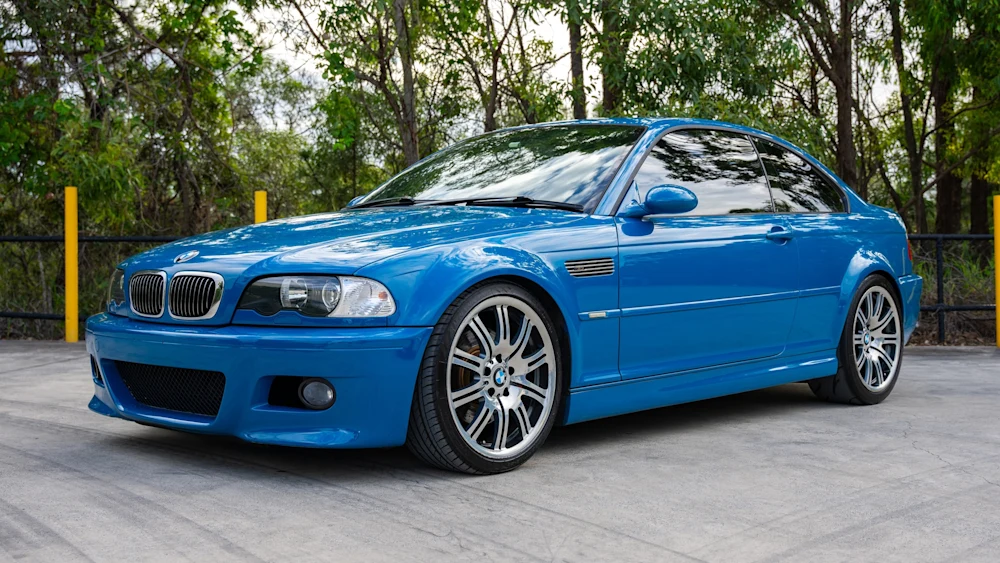

BMW THROUGH THE YEARS
Design & Evolution
BMW design has changed significantly over the years. From the clean and simple lines of older generations to the more aggressive and modern styling seen in recent models, the brand has continued to evolve while still keeping its recognizable performance identity. Features such as the kidney grille, headlights, body proportions, and overall shape have changed from generation to generation, giving each era its own unique appearance. Some older BMWs are known for their simple and timeless designs, while newer models focus more on bold styling, sharper lines, and a stronger road presence. On this page, I will compare different BMW generations, look at some of the major design changes, and share my personal thoughts on which styles I prefer and how BMW design has evolved over time.